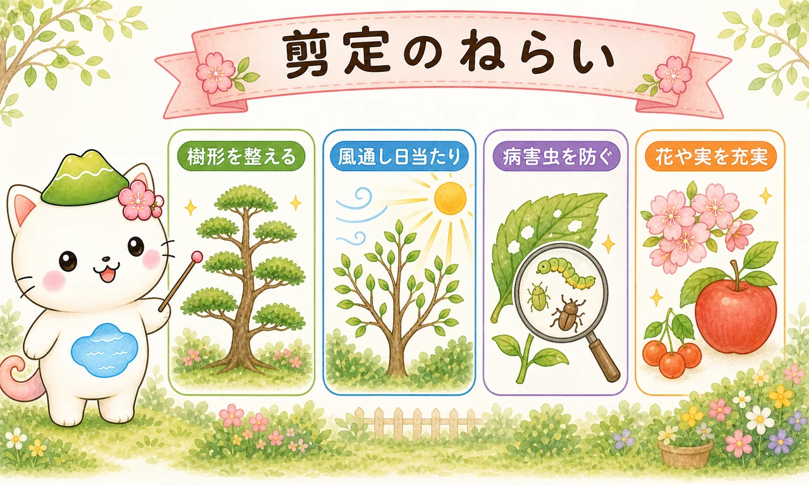
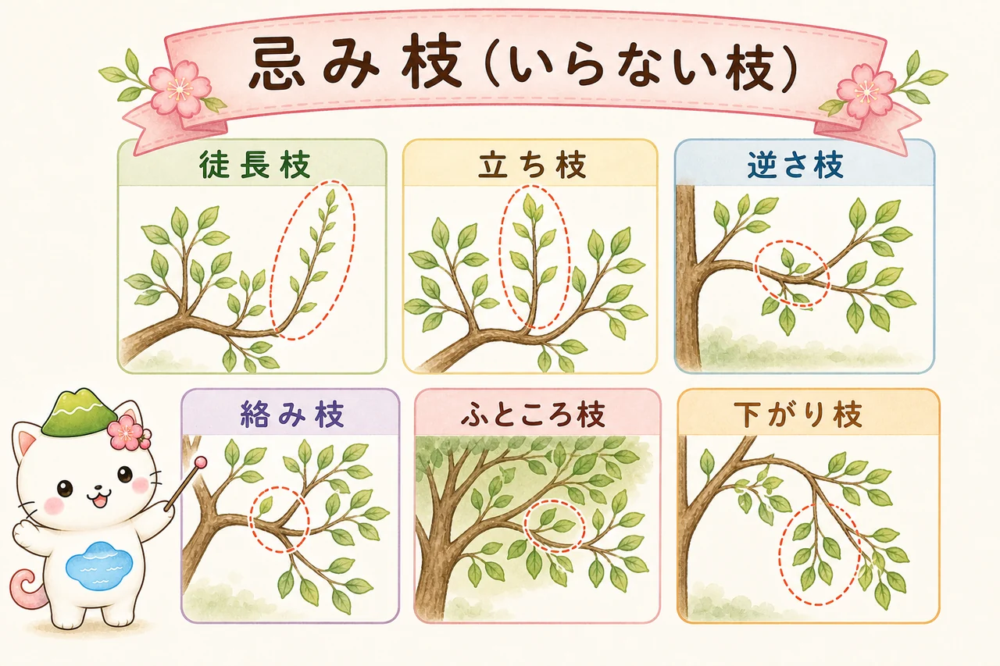
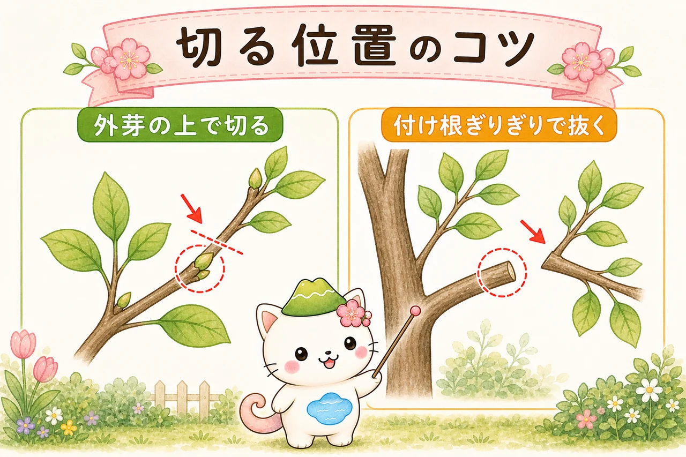
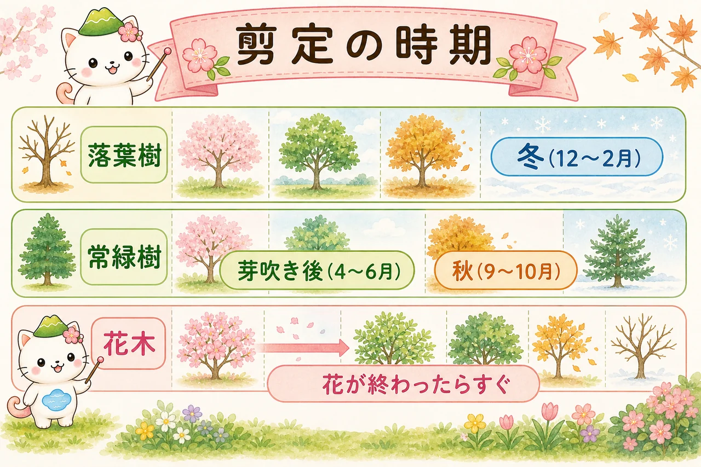

そもそも、なぜ剪定するの？
剪定は「ただ短くする」作業ではありません。目的を知ると、どこを切るべきかが見えてきます。庭木の剪定には、おもに次のねらいがあります。

- 樹形を整える：大きさや形をコントロールし、美しい姿を保つ。
- 風通し・日当たりを良くする：込みすぎた枝を減らし、内部まで光と風を通す。
- 病害虫を防ぐ：蒸れや日陰を解消し、害虫や病気が出にくい環境にする。
- 花や実を充実させる：余分な枝に分散する力を、残す枝に集める。
- 枯れ枝・危険な枝の整理：折れそうな枝や枯れ枝を取り除き、安全を保つ。

切る前に「この木をどうしたいか」を一言で決めるのがコツ。「小さくしたい」「花を見たい」「風を通したい」——目的がちがえば、切る枝も変わるよ。
2つの基本の切り方
剪定の切り方は、たくさんあるようで、基本は2つだけ。この2つの使い分けが、剪定の土台になります。

① 間引き剪定（枝を元から抜く）
枝を付け根から丸ごと抜く切り方です。枝数が減るので、込み合いが解消し、風通しと光が良くなります。木のサイズや自然な形をあまり変えずに、すっきりさせたいときの基本。迷ったらまずこちらです。
② 切り戻し剪定（枝を途中で短くする）
枝を途中で短く切る方法です。切ったところの近くから新しい枝が出て枝分かれが増えます。大きくなりすぎた木を小さくしたいときや、枝数を増やしてボリュームを出したいときに使います。ただし強く切ると勢いの強い枝が暴れやすいので、加減が大切です。
「落ち着かせたいなら間引き、増やしたいなら切り戻し」。なぜそうなるのかは、植物ホルモンと剪定の記事でしくみから説明しているよ。
切ってよい枝＝「忌み枝」
「どの枝を切ればいいかわからない」ときは、まず忌み枝（いみえだ）を探しましょう。樹形や流れを乱す、いわば「いらない枝」のこと。これらを付け根から抜くだけで、見違えるほどすっきりします。

- 徒長枝（とちょうし）：まっすぐ長く勢いよく伸びた枝。樹形を乱す。
- 立ち枝：枝の途中から上へ強く突き上げる枝。
- 逆さ枝・戻り枝：幹の方へ内向きに伸び返る枝。
- 絡み枝・交差枝：ほかの枝と交差してこすれ合う枝。
- ふところ枝：樹冠の内側にできる、日の当たらない弱い枝。
- 下がり枝：下へ垂れ下がる枝。
- ひこばえ・胴吹き枝：株元や幹の途中から出る、本来不要な枝。
- まず枯れ枝を取る。
- 次に忌み枝（上の枝）を付け根から抜く。
- 最後に、それでも込み合う所を間引いて光を入れる。
どこで切る？ 切る位置のコツ
同じ枝でも、切る位置で仕上がりとその後の伸び方が変わります。基本は2つです。

切り戻すときは「外芽の上」で
枝を短くするときは、外向きについた芽（外芽）の少し上で切ります。すると、次に伸びる枝が外側へ向かい、樹冠の中が混みにくくなります。芽から離れすぎて切ると、残った部分が枯れ込んで見た目も悪くなります。
抜くときは「付け根ぎりぎり」で
枝を元から抜くときは、付け根（枝の付け根のふくらみ＝枝隆）を残して、ぎりぎりで切ります。深く切りすぎると幹を傷つけ、残しすぎると切り口が枯れて見苦しくなります。
太い枝の切り方
太い枝をいきなり1回で切ると、最後に枝の重みで樹皮が裂けて、幹まで傷つくことがあります。これを防ぐのが「3段階切り」です。
- ① まず付け根から少し離れた所で、下から1/3ほど切り込む。
- ② その少し先を上から切り落とす（重みは①の切り込みで止まり、裂けない）。
- ③ 残った枝を、付け根のふくらみを残してきれいに切り直す。
切り口が大きいときは、雑菌や乾燥から守るために癒合剤（ゆごうざい）を塗っておくと安心です。
剪定の時期
剪定は「いつでもOK」ではありません。木のタイプによって、向いている時期があります。

落葉樹は「冬の休眠期」が基本
葉を落として休んでいる12〜2月ごろが、太枝の整理や本格的な剪定に向きます。葉がないので枝ぶりが見やすく、木の負担も小さめです。
常緑樹は「芽吹き後〜初夏」と「秋」
厳寒期に強く切ると傷みやすいので、新芽が伸びたあと（4〜6月ごろ）や、暑さの落ち着いた秋（9〜10月ごろ）に軽く整えます。真夏・真冬の強剪定は避けます。
花木は「花が終わったらすぐ」
サツキやツツジ、アジサイなどの花木は、翌年の花のもと（花芽）が夏ごろにつくられます。花後すぐに剪定すれば花芽を切らずにすみますが、秋〜冬に強く切ると、翌年の花芽ごと落としてしまうので注意。「花が終わったらすぐ」が基本です。
「うちの木、剪定したのに翌年花が咲かなかった」——それ、花芽を切っちゃったのかも。花木は“花が終わった直後”が安全だよ。
道具と手入れ
道具は多くなくて大丈夫。まずは次のものがあれば始められます。
- 剪定ばさみ：直径2cmくらいまでの枝に。いちばん使う基本の道具。
- 刈込ばさみ：生垣や玉ものを面でそろえるとき。
- 剪定のこぎり：はさみで切れない太い枝に。
- 癒合剤：太枝の切り口の保護に。
道具は切れ味と清潔さが大事。切れない刃は枝をつぶして傷口を広げ、汚れた刃は病気を移します。使う前後に汚れをふき取り、ときどき刃を研いでおきましょう。
やりすぎ注意
いちばん多い失敗が「切りすぎ」です。強く切るほどよいわけではありません。
一度に葉や枝を減らしすぎると、木は栄養をつくる力を失って弱ります。反動で勢いの強い徒長枝が暴れて、かえって樹形が乱れることも。目安として、一度に切るのは全体の1/4〜1/3まで。迷ったら少なめにして、翌年に持ち越すのが安全です。
剪定は「一度で完成」を目指さなくて大丈夫。少しずつ、毎年。木とのつき合いは長いから、あせらずいこうね。
はじめての3ステップ
むずかしく考えず、この順番で見ていけば大丈夫です。
① 枯れ枝を取る
まずは枯れた枝、折れた枝を取り除きます。迷う必要がなく、これだけでも見た目が整います。
② 忌み枝を抜く
徒長枝・立ち枝・絡み枝など、流れを乱す枝を付け根から抜きます。「いらない枝」を減らす段階です。
③ 込みすぎを間引く
それでも混み合っている所を、間引いて光と風を通します。切りすぎないよう、少し引いて全体を見ながら進めましょう。
まとめ
剪定の基本は、目的を決める → 2つの切り方（間引き・切り戻し）を使い分ける → 忌み枝から切る → 正しい位置で切る → 適期に、切りすぎない。この流れさえつかめば、初めてでも迷いません。
まずは枯れ枝と忌み枝を抜くところから。少しずつ手を動かすうちに、木の見方が変わってきます。「なぜその切り方がいいの？」と気になったら、植物ホルモンと剪定へ。具体的な木で実践したくなったら、黒松の剪定もどうぞ。